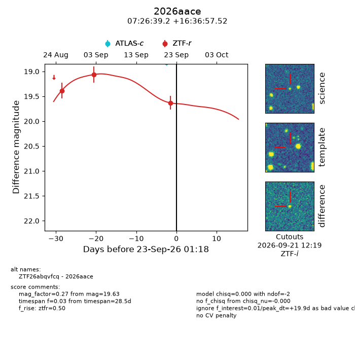
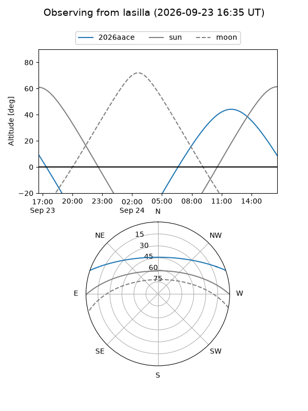
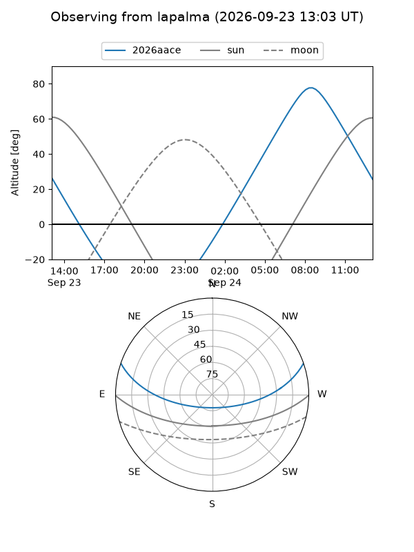
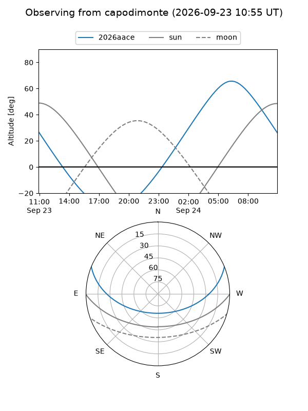
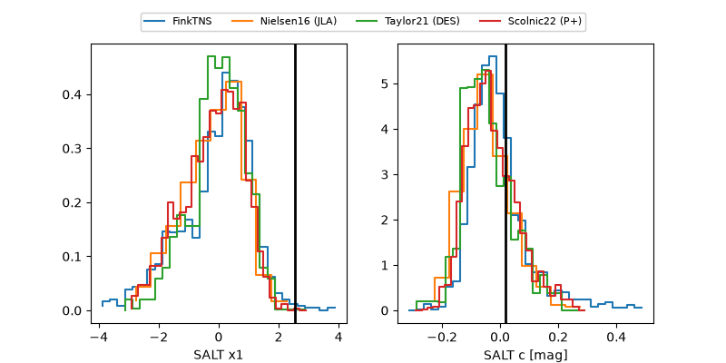

2026aace
Target 2026aace at 2026-09-23 13:06
Aliases and brokers:
FINK-ZTF: ztf.fink-portal.org/ZTF26abqvfcq
Lasair-ZTF: lasair-ztf.lsst.ac.uk/objects/ZTF26abqvfcq
ALeRCE-ZTF: alerce.online/object/ZTF26abqvfcq
YSE-PZ: ziggy.ucolick.org/yse/transient_detail/2026aace
TNS name: wis-tns.org/object/2026aace
Direct TNS query: direct search
alt names
ZTF26abqvfcq (ztf,fink_ztf)
2026aace (tns,yse)
Coordinates:
equatorial (ra, dec) = 111.6634,+16.61598
equatorial (HMS+DMS) = 07:26:39.21,+16:36:57.52
galactic (l, b) = (201.7249,+15.12456)
Flags:
TNS type: nan
peak dt: +20.4
Photometry:
last ztfr=19.63
3 ztfr detections
Lightcurve

Visibility



Additional plots
